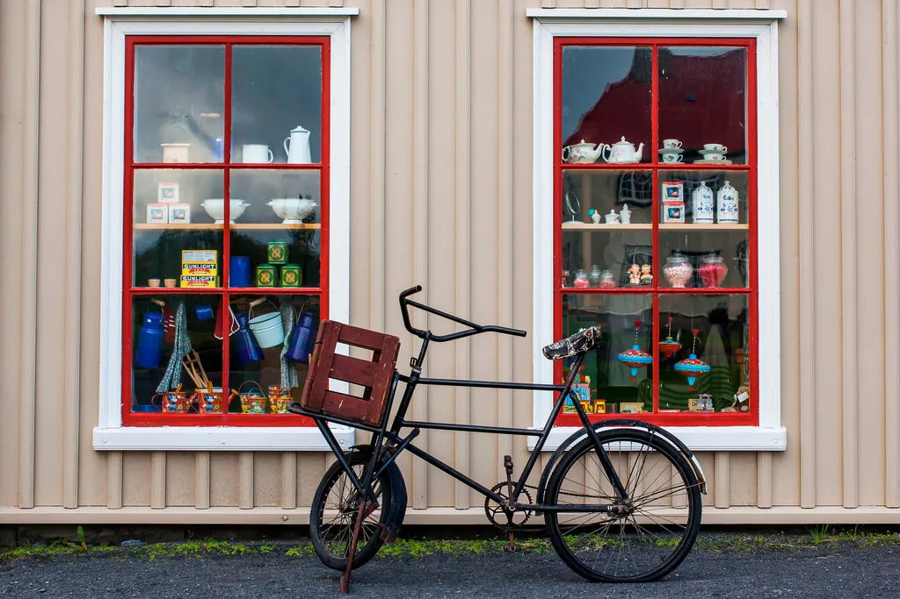

Reykjavik › Self-guided walk
Reykjavik on your own: a self-guided walk with the TouringBee audio guide
No group, no timetable — from Arnarhóll through the centre and the Old Harbour to Þúfa, 2–2.5 hours at your own pace.
Reykjavik is an easy city to see without a tour. The centre is small: the whole route from Arnarhóll to the Old Harbour is 2–2.5 hours including stops. The streets are open, the waterfront is free, and Hallgrímskirkja lets you in without a ticket. You only pay for specific things: the church tower, the museums, a whale-watching boat.
But Reykjavik tells you almost nothing about itself. Low painted houses, a sculpture by the water, a concrete church on the hill — handsome, and unexplained. Why does a capital look like a large village? What is that ship in the harbour, and why does it matter more than it looks? The TouringBee audio guide closes that gap as you walk: 27 stories along the route, with the GPS map and the audio working without a connection.
Why it is better with an audio guide
You understand what you are seeing. Reykjavik does not explain itself with plaques. The guide tells you what to look at and why it matters, from the concrete church to the old patrol ship in the harbour.
You walk at your own pace. No group and no timetable: start when it suits you, turn off for coffee, go back to any story.
No connection needed. Download the tour in advance and both the GPS map and the audio work offline. In the wind by the water that beats hunting for a signal.
Listen to the opening
A short extract, about a minute. The same voice takes you from Arnarhóll to the harbour. The guide is recorded in English, and so is the intro.
One story from the route: the hidden people
Ask an Icelander whether they believe in elves and you will probably get neither yes nor no. The folklorist Terry Gunnell puts it this way: very few will say outright that they believe, but they will not deny it either. That is the honest answer to the question visitors ask most often here.
This is not elves as the films have them. In Icelandic they are huldufólk, the hidden people: beings who live in rocks and lava fields, look and behave much like humans, and show themselves only when they choose to. In nineteenth-century Icelandic folklore "hidden people" and "elves" were simply synonyms.
The numbers are more modest than the travel myth. In modern surveys around 7–8% of Icelanders are certain that elves exist and about 45% consider it likely or possible. And the famous stories about roads bending around a rock do not work the way they are retold. In 2013 a road project near Álftanes was stopped after protests — but the roads authority explained its decision differently. Its spokesman said plainly that it was not about believing in elves, but about elves and hidden people being part of the cultural heritage. The rock was judged unique, the road could be moved, and so it was moved.
There are twenty-seven stories like this on the route. Some are legends, like this one; others are the documented history of a town that turned into a capital in a hundred years.
The route: 8 stages, 27 stories
Below are the eight main stages of the walk. In the app the route is broken into 27 audio stories with extra stops and illustrations.
- Arnarhóll and the Government House — the hill with the statue of the first settler and the low white government building below it.
- Laugavegur and Rainbow Street — the shopping street and the painted climb towards the church.
- Hallgrímskirkja — the concrete church on top of the hill, visible from almost anywhere in the centre.
- The Einar Jónsson Museum and the Leif Erikson statue — a sculpture garden and the figure on its plinth in front of the church.
- The Sun Voyager and the shore path — the steel hull by the water and the view across the bay to Mount Esja.
- Harpa and the Wind Harp — the honeycomb glass concert hall and the square in front of it.
- The Old Harbour — moored vessels, whale-watching boats and the hull of an old patrol ship.
- Grandi and Þúfa — a former harbour-industry district and a man-made grass mound right on the shore.
The route does not cover every street in Reykjavik — it is the main line through the centre and the harbour. What is free in the city and what needs a ticket is in the Hallgrímskirkja guide.
Did you know?
Reykjavik is the world's northernmost capital, and the whole walk fits into a couple of hours. The stops include the Icelandic Phallological Museum: you do not have to go in, but you will walk past it.
On your own, with the audio guide, or with a live guide
| On your own | With the TouringBee audio guide | With a live guide (tip-based) | |
|---|---|---|---|
| Price | €0 | €9.99 per person · one payment · one year of access | No fixed price; GuruWalk's own guidance is €10–20 a head |
| When | Any time | Any time, at your pace, with nobody to wait for | Fixed departures: 10:30 and 13:30 with CityWalk, 11:00, 15:00 and 17:00 on GuruWalk; two hours each |
| What you get | The route and the views; context only from plaques and a guidebook | 27 stories on the route, an offline GPS map, illustrations; audio in English | A live account and the chance to ask; booking required |
| Right for you if | You care more about the atmosphere than the history | You want to understand what you see but walk on your own | You like company and the departure time suits you |
In every version, museum and tower tickets are separate. More on the tip-based tours in the free walking tours guide.
How it works
- You buy the audio guide — the activation email arrives within 3–5 minutes.
- You install the TouringBee app (iPhone or Android) and activate your purchase.
- You download the tour in advance — after that the map and the audio work without a connection.
- You walk the route: the GPS map shows where you are and each story starts at its own place. Stop, go back, take a break whenever you like.
Before you set off: charge the phone to at least 80% and bring your own headphones — the tour description lists them explicitly as not included.
Why you can trust this guide
- Rated 4.6 out of 5 on the App Store and Google Play.
- The texts are written by journalists and historians; the narration is professional.
- One payment, no subscription; a year of access, so you can walk the route again.
- Bookings can be cancelled right up to the start and are fully refundable.
The Reykjavik audio guide
The walk from Arnarhóll to Þúfa: 27 stories, an offline GPS map, illustrations.

TouringBee Reykjavik audio guide
- Map and audio offline. No mobile data needed on the walk
- Every story starts at its own place — by GPS
- No group, no timetable. Start when you like and from any point
- One payment, one year. Walk the route a second time
Useful to know before the walk
- The start is at the Ingólfur Arnarson monument on Arnarhóll. There is no guide waiting: this is a self-guided walk. Buses run to any of the Lækjartorg stops.
- You can start from any point. If you are already down by the harbour, open the list of stops and begin there; you can come back to the beginning at any time.
- Footwear — non-slip and waterproof: the tour description makes a point of it, and it is not wasted advice.
- The wind matters more than the temperature. A hooded jacket beats an umbrella.
- Tickets are not included. Hallgrímskirkja is free to enter; the tower is 1,500 ISK adult, 200 ISK child 7–16, 1,300 ISK student. Museums on the route have their own tickets — easy to compare on Tiqets.
- The finish is Þúfa out on Grandi. The easiest way back to the centre is on foot along the same shore.
Common questions
Can you see Reykjavik on your own, without a tour?
Yes. The centre is compact, the streets and the waterfront are open, and Hallgrímskirkja is free to enter. You only pay for the tower, the museums and the boat trips.
How many stories are in the audio guide, and how long is the walk?
27 stories on the route from Arnarhóll to Þúfa. The walk itself takes 2–2.5 hours at your own pace; allow more if you go into the museums.
Do you need an internet connection?
Only to buy and download the tour. After that the map and the audio work offline.
Are museum and tower tickets included?
No. The audio guide follows a free route; the Hallgrímskirkja tower and the museums are separate tickets.
Can you start somewhere other than the beginning?
Yes, you can start from any point. Open the list of stops, pick the one you are standing at, and come back to the ones you skipped whenever you like.
What language is the audio guide in?
The audio is recorded in English. The app and the route are the same, but the stories are narrated in English.
Is the walk suitable for children?
Yes: the stories are short, you can stop at any moment, and most of the route runs through the centre and along the waterfront. The only noticeable climb is up to Hallgrímskirkja.
Read next
- Hallgrímskirkja and the tower — tickets, hours and the 16:45 deadline
- Free walking tours in Reykjavik — who runs them and which departure to take
- Reykjavik in one day — the route the hours actually allow
- Keflavík airport to the city — transfers and what to do before check-in
The short version
Reykjavik is a fine city to walk on your own: the centre is small, the waterfront is free, and the walk from Arnarhóll to the harbour takes a couple of hours. But the city does not explain itself. To understand what is in front of you at each step, take the TouringBee audio guide: 27 stories, an offline map, €9.99 once — no groups and no timetables.
Walk Reykjavik with the audio guide
27 stories on the route from Arnarhóll to Þúfa. One payment, one year of access.
TouringBee publishes the self-guided Reykjavik audio guide — it is our product, and this page sells it. That is why we state plainly what is free in the city, what needs a ticket, and what the guide does not include. Some links on this page are affiliate links: if you book through them we may earn a commission at no extra cost to you. The tour contents, stop order, access period and cancellation terms were read from the Bókun listing on 29 October 2026. Hallgrímskirkja tower prices and the tip-based tour timetables come from our own guides to those subjects. Always confirm before you travel.